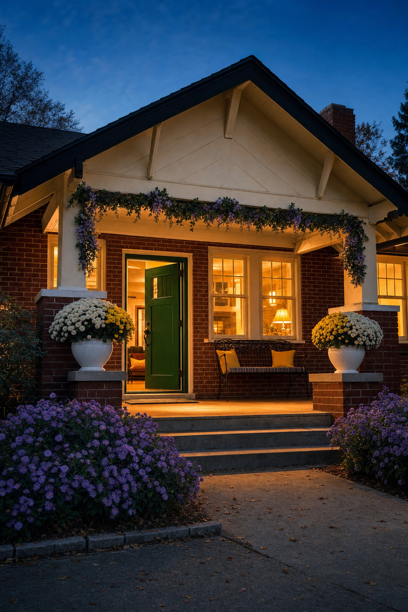
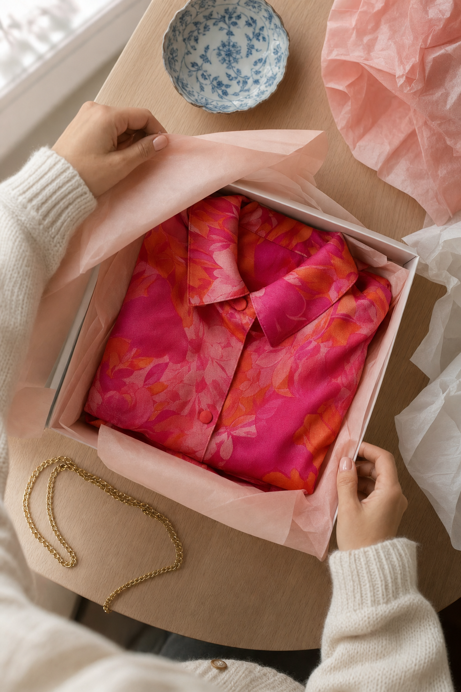

01 · The read
Twelve years, and counting.
Hi Judy. I'm Nelson Taylor; I direct and shoot brand content across Dallas–Fort Worth. I came across your anniversary weekend in The Scout Guide's events listing, which marks the occasion as “celebrating 12 years of Keeping Up With the Joneses and 100 years of 5017 El Campo Avenue.” Congratulations on twelve years.
Your Instagram describes the shop in its own words: “Inside a charming little Craftsman bungalow facing Camp Bowie Blvd is a well-curated boutique filled with fun, colorful…” The photos on your site fill in the rest. A red-brick porch and a green front door; inside, a white-painted brick fireplace with ginger jars along the mantel, rails of bright prints, hardwood underfoot.
A shop like that isn't browsed so much as visited, one room after another. So that's the whole idea.
Film the visit.

02 · The format
Room by room, every week.
Every week of the quarter opens the same way: a hand on the front door, the door swings open, and we step into one corner of the house. Then one outfit, one corner, one idea: a colour story pulled from a rail, a look built on the table, a gift folded into tissue.
The same first second, a different room each time, so the feed keeps a rhythm people come to recognise before they read a caption. The holiday season gives it plenty to carry: gifts, colour, the windows lit early in the evening.
I frame for the phone from the first setup, so nothing you post is a crop of a wider shot.

03 · The day, box by box
Porch to lamplight.
One day at the bungalow, on a day you choose and around your hours, shot in the order a customer meets the house. Rooms, rails, colour and hands. Nobody appears on camera without saying yes first; customers and team are hands at most, and we'd agree that together before the day.
-
Box 1 · the porch steps
Creative direction — treatment frames, not final footage. The porch steps
Early light on the brick and on whatever the porch is wearing for the season. The walk up to the door: the establishing shot for every week.
-
Box 2 · the front door
Creative direction — treatment frames, not final footage. The opener
A hand on the handle, the door swings open, the camera steps inside. The same first second in every episode, so the feed has a rhythm people come to know.
-
Box 3 · the mantel, morning
Creative direction — treatment frames, not final footage. The mantel
The white brick fireplace and the ginger jars along it, window light travelling across the hardwood. A slow push on the FX6, nothing hurried.
-
Box 4 · the rails, noon
Creative direction — treatment frames, not final footage. The rails
Hangers slid along a rail, prints side by side, a colour story pulled one piece at a time. Colour does the talking.
-
Box 5 · the table, afternoon
Creative direction — treatment frames, not final footage. The look
Hands building an outfit on the table: a blouse laid flat, a necklace set beside it, a scarf folded in. Shot from above, hands only.
-
Box 6 · the gift, afternoon
Creative direction — treatment frames, not final footage. The gift
Something chosen from Gift & Home, folded into tissue in a shallow box and handed over in a bag. The holiday thread, in a few quiet seconds.
-
Box 7 · the porch, dusk
Creative direction — treatment frames, not final footage. The windows lit
The house from the walk as the windows glow and the door stands half open. The last shot of the day, and the closing beat of every episode.
Between video setups the A7RV makes photographs of the same rooms in the same light, so the stills bank and the reels look like one shoot, because they are.
04 · The season
The holidays, in tissue.
The holiday season puts the gift side of the shop to work. Your menu runs from apparel and accessories to sleepwear and Gift & Home, and that gives the quarter its own weekly thread: a piece chosen, set on the table, wrapped, handed over in a bag at the door.
Filmed slow and close, it's a few seconds of paper and hands that hold a thumb mid-scroll. It's hands and tissue only, which keeps every face out of it unless someone asks to be in.
Same door, new gift.
05 · What it is
The day, plainly.
- One shoot day at Keeping Up With the JonesesIn the bungalow, around your hours, with me directing and shooting.
- Sony FX6 + Sony A7RVCinema motion on the FX6; stills and hybrid on the A7RV.
- Vertical-firstEach piece is framed 9:16, made for Reels, TikTok and Shorts.
- Edited vertical videos and a stills bankShot the same day, made to carry a quarter of posting.
- Two rounds of editsAbout two weeks from the shoot to delivery.
Everything else, we'd talk through together.
06 · Who
The person behind the lens.
My name's Nelson Taylor. Taylormade Creative is the studio I run in Dallas–Fort Worth, built on fourteen years of design and creative direction; most of that work now goes into brand content I direct, shoot on the FX6 and the A7RV, and edit myself.
That work has included TONI&GUY Academy and Dreamcatchers Hair, and across the fourteen years the client list runs from Lava Cantina and KFC to IAS Academy and Curls.
One person carries the day from the first frame to the final cut, so what you see planned here is what turns up in the edit.
07 · Over to you
Whenever the season allows. There's nothing here that needs deciding.
If this sounds like Keeping Up With the Joneses, a twenty-minute call is plenty to walk the house through together. Anything here that doesn't suit the shop can go, and anything I've missed, we'd add.
And if now isn't the moment, “not yet” is an easy answer.
Email NelsonFounder & Creative Director · Taylormade Creative
(817) 707‑1291 · taylormademd@gmail.com
www.taylormadecreative.net · @taylormade_creative